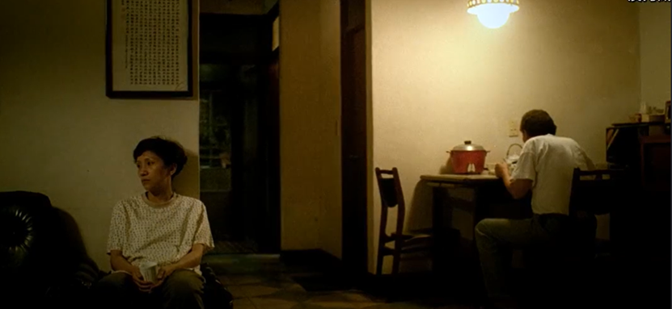
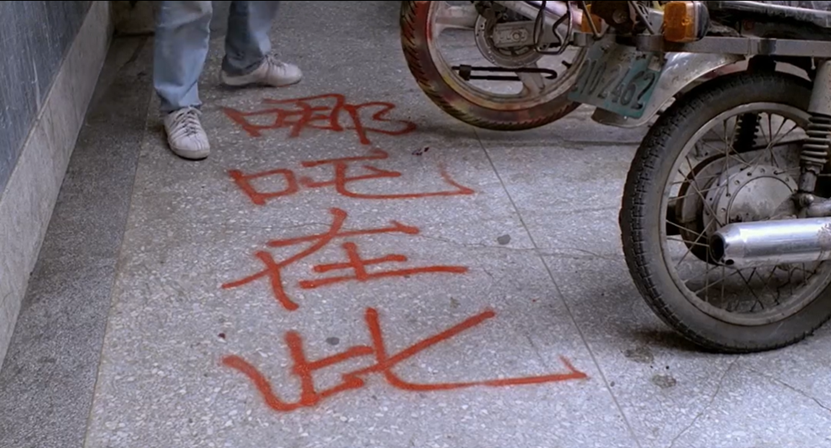
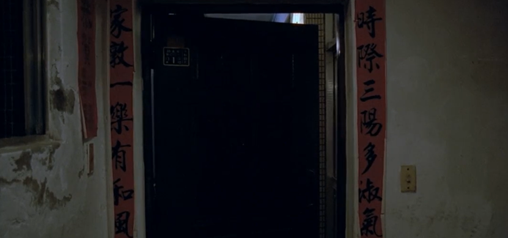
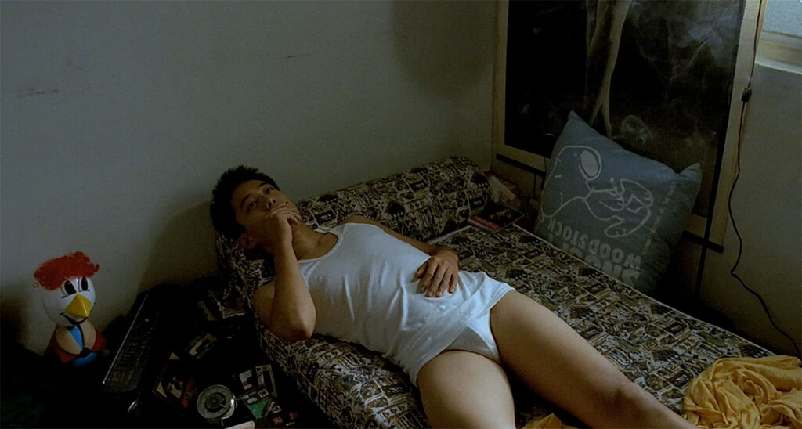
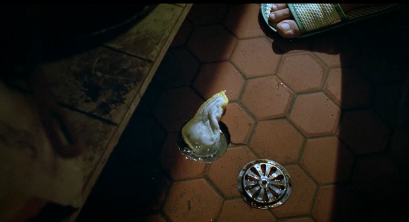
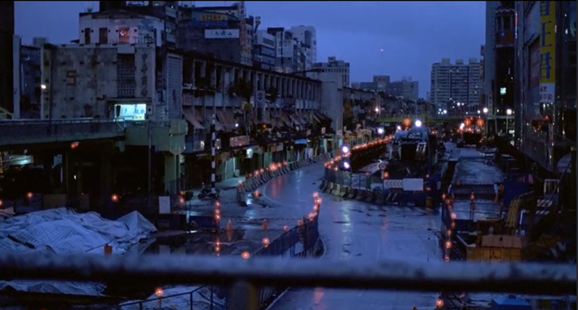

《青少年哪吒》是蔡明亮導演的電影處女作，故事分成兩個主線分頭進行，但時不時這兩條主線又彼此交織。小康生在一個典型的老夫少妻外省本省人結合的家庭，而他又是一個身處在聯考壓力下，不知何去何從的重考生；阿澤整天遊手好閒做些偷雞摸狗的事情，他的人生看似肆意自由，但其實阿澤的內心深處對於未來也十分迷茫，只能用抽煙打電動來填補生活的空虛，這兩個青少年有著截然不同的個性跟人生，但卻同樣在台北這個多雨的城市對於未來感到迷茫。下面，我想闡述三個我在觀看完電影後相關的感想：第一，用畫面跟動作塑造角色與故事；第二，角色的空虛與寂寞；第三，「水」在這部電影之中的意象。
本段我想探討蔡明亮導演在電影中用畫面跟動作代替言語塑造角色與故事，但不集中討論與角色人生空虛有關的畫面(第五段)以及跟「水」的意象(第六段)。本場電影中的對話不多，但那些蔡明亮導演用畫面跟動作訴說的故事卻值得細細品味，以下我挑了三個畫面跟片段分析。第一個是電影開始的前5分鐘，這個片段沒有任何一句對白，有的只是畫面跟動作，但卻可以使我們理解兩位主角的背景、個性，各自的人生難題，例如：在小康的片段中，桌上擺滿教科書，但小康卻盯著窗外的雨夜、血滴落在教科書上、走出房門處理傷口時，父母親在房間分開坐在房間的角落，卻在他打開房門時一同看向他、小康不回父母親關心的話語等等，這些畫面都告訴我們——小康是一個不想再參加聯考的考生，但父母親卻希望他能夠好好讀書考上大學，血滴在課本上象徵聯考帶來的痛苦，爸媽安靜地坐在小康的書房外，如同監視他的監視器，因此當父母關心他為何受傷時，小康認為父母就像一座牢籠，關心他但同時也壓迫他的自由。
第二個是小康坐在父親的車上盯著車外載著阿桂的阿澤，這邊的畫面故事感很強，小康如同身處牢籠的囚犯渴望著自由，而阿澤那時表現出的肆意自由讓小康對阿澤產生愛意。我認為小康愛的並不是阿澤這個人，而是他在他身上看到了自由、青春，是一切當時他渴望的東西。而在後來小康砸爛阿澤的機車時的情感也是複雜的，除了是為父親出氣的憤怒、一絲絲隱密的對於阿澤跟人上床的忌妒(因此寫下AIDS)，更甚者是試圖證明自己比父親更強大，敢反抗父親不敢反抗的事物，並寫下「哪吒在此」利用哪吒為名義給予他勇氣來反抗家庭給予的枷鎖，正如同他影片一開始試圖起乩掙脫家庭的束縛一樣。小康就像奚淞先生寫的〈封神榜裡的哪吒〉一樣，他們一開始都努力嘗試達到父母期待，但現實生活的壓力最終讓他們想逃離現實，而故事中的哪吒最後透過「叛逆」來追求並得到心靈上的新自由，導演藉此暗示小康其實也想要叛逆達到自由。
最後一個畫面則是小康的爸爸在送完受傷的阿彬跟阿澤回家後，他把門鎖上，但不久又再度打開鎖，並且打開了一個門的縫隙。鎖門跟解鎖的聲音在深夜的樓道裡很響亮，對比於小康父子之間幾近沉默的愛意表現，令人覺得難過又諷刺。而導演停在這個門的縫隙畫面停了5秒之久，這個畫面象徵著一個父親對兒子沉默無聲的愛，小康的爸爸因為在阿澤跟阿彬的身上似乎看見小康的影子，因此刻意不把門關上，替小康留了「回家」的道路。除此之外，電影裡小康房間殺不死的蟑螂、阿澤家到了4樓就會打開的電梯，這些生活中無法解釋的問題，就像是他們人生中的煩惱一樣，難以找到一個解決的出路，雖然微不足道，卻時時刻刻的不停出現，有如「房間裡的大象」一樣。
電影角色裡的空虛與寂寞可以從片中幾乎多達10次的主角躺在床上望著天花板發呆的畫面中體會到，小康、阿澤、阿桂幾乎都在不同的時間、不同的地點，體會著相同的空虛和對未來的茫然。小康的空虛感即使從補習班退費成功後也沒有消失，因此他訂下一個小目標，也就是報復阿澤，達成這個目標讓小康很快樂，但快樂過後，又剩下什麼呢？小康又再度成為沒有目標、方向的青少年，因此小康才會在慶祝完後躺在床上望向天花板，眼中仍是對於未來的茫然；阿澤用抽煙、電玩、性愛填補他的生活，沒有錢就去偷東西賣，沒有人管他，但在那些物質帶來的快樂有如海水般消退後，阿澤的人生就無所遁形，他也不知道這樣的生活有什麼意義，生活中也沒有人拉他一把；阿桂的畢生命運就像是寄託在男人身上，她同樣也不知道未來該怎麼辦，但到最後她仍是要求阿澤帶她走而非選擇自己去找到生命中的出路。在片中，最令人感到孤獨的時刻就是阿澤跟阿桂他們的性愛結束後，他們先後醒來發現對方不在，他們在不同的時間，同一個地點開啟同一扇窗凝視相同的夜晚，體會相同的空虛和寂寞但不發一語。即使先前他們的肉體有了交集，但靈魂仍是一個個孤獨的個體。
最後，「水」在這部電影裡出現了許多次，又可分為具象的水與抽象的水。首先，電影中具象的水舉凡下大雨、積水、洗臉、上廁所等等，這些水我認為他們是城市漂泊中的空虛孤寂，代表著潛在的壓力，而性的慾望也包含在其中。在影片的一開始，阿澤家積水嚴重，他試圖疏通排水管但徒勞無功，似乎在暗示人生的迷茫不是那麼容易就可以解決的。阿澤的生活就有如一灘死水一樣，這些積水隨著阿澤對於人生越感空虛，積水更加明顯，因此電影開頭阿澤有兩次躺在床上發呆，積水甚至蔓延到他的房間。在他遇到阿桂以後，積水慢慢消退，阿澤的人生好像沒有那麼迷茫了，阿澤跟阿桂就像是彼此在迷茫生活中的浮木，能夠帶給彼此一攤死水的生活中擁有短暫的快樂，但快樂仍舊是短暫的，當激情消退後，阿澤發現他還是對於未來一片迷茫，未來到底在哪裡呢？下水道開始回水，堵也堵不住，就像是阿澤的人生一樣進退維谷，通不開也堵不住。
最後，抽象的水指的正是當時在施工的捷運，蜿蜒的有如一條河流。在電 影名稱出現後的幾秒鐘，電影切了一個白天施工道路拐彎處的鏡頭，像是在暗 示觀者是站在主角的某個人生階段看著他們的故事；阿桂喝醉後躺在施工的道 路上，她想躺在這裡，卻被阿澤跟阿彬給拉走，似乎也是在暗喻人生不能夠一 直停留在原地，就像河流一樣，就算自己不想往前，也會有外在的壓力迫使他 繼續向前；最後片尾是一個日落蜿蜒的施工道路，呼應一開始片頭的部分，觀 者目送代表著主角人生的河流遠去，究竟小康、阿澤、阿桂的未來是通往哪邊 呢？似乎只有天才會知道了。
 修復版預告：https://www.youtube.com/watch?v=agl2-VN5BDw